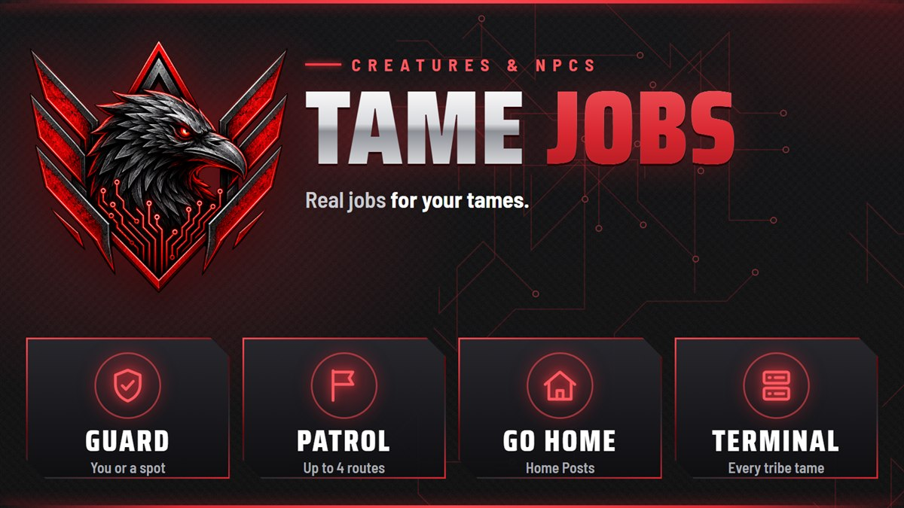
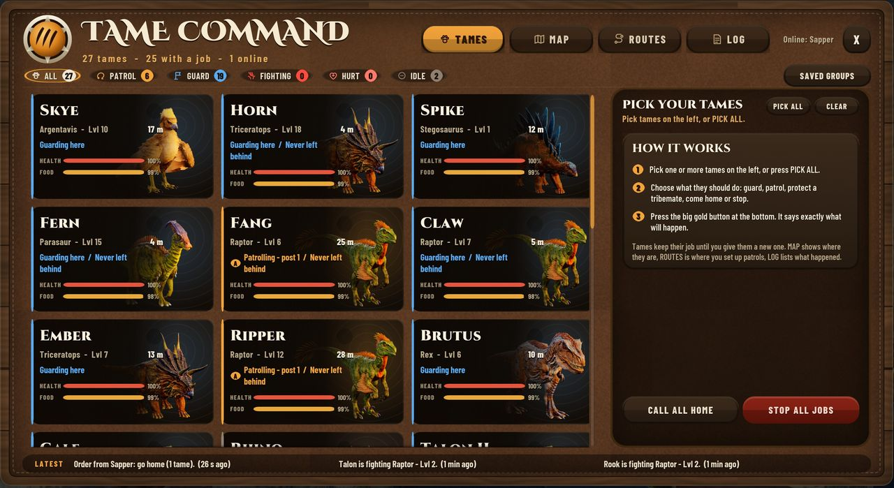
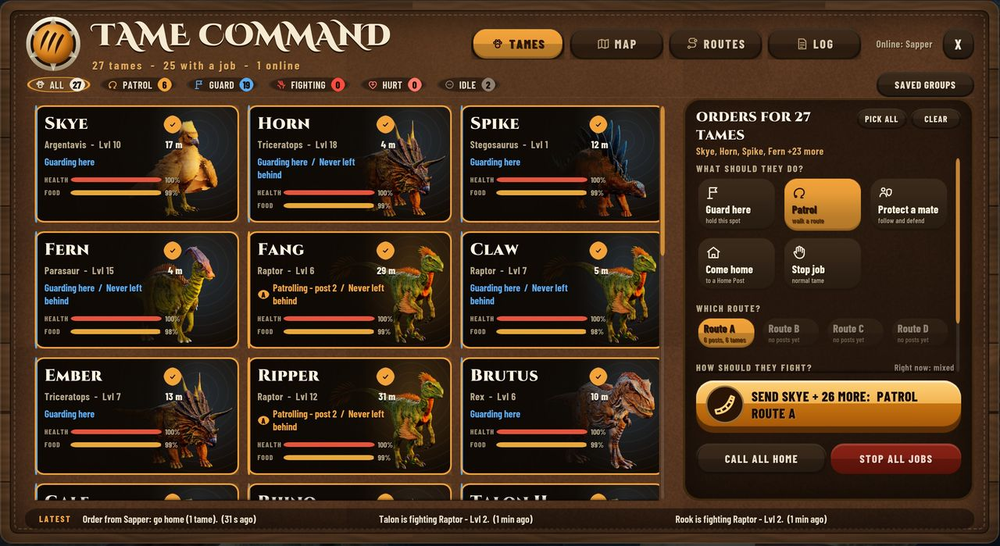
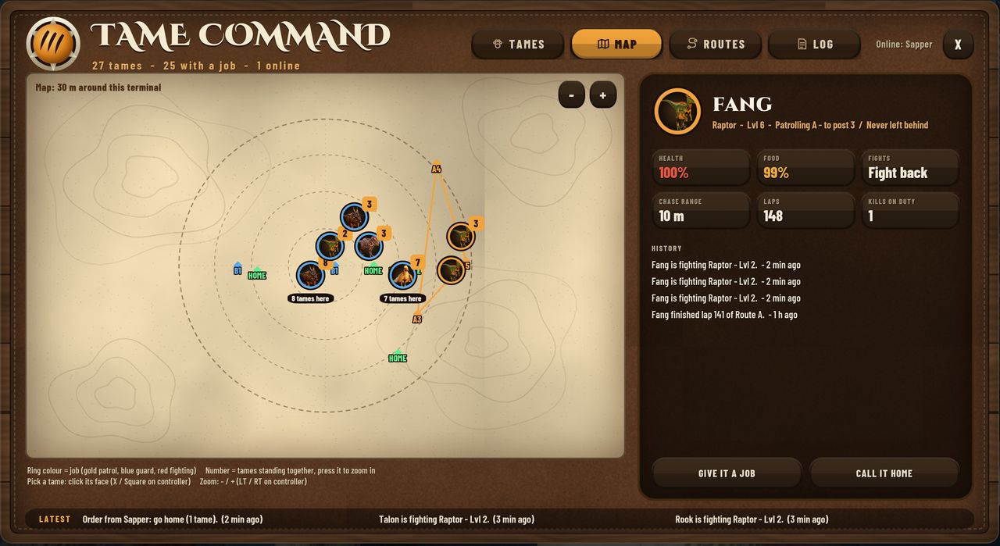
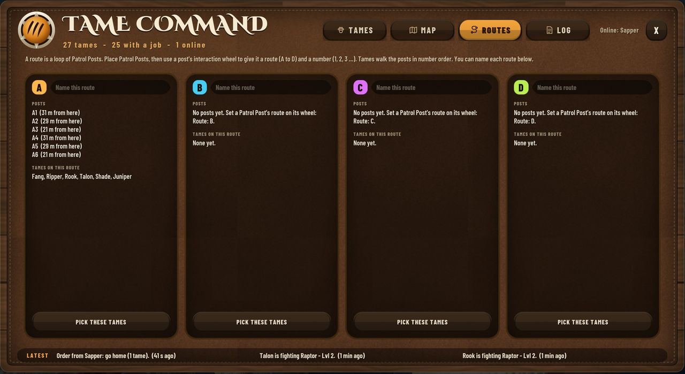
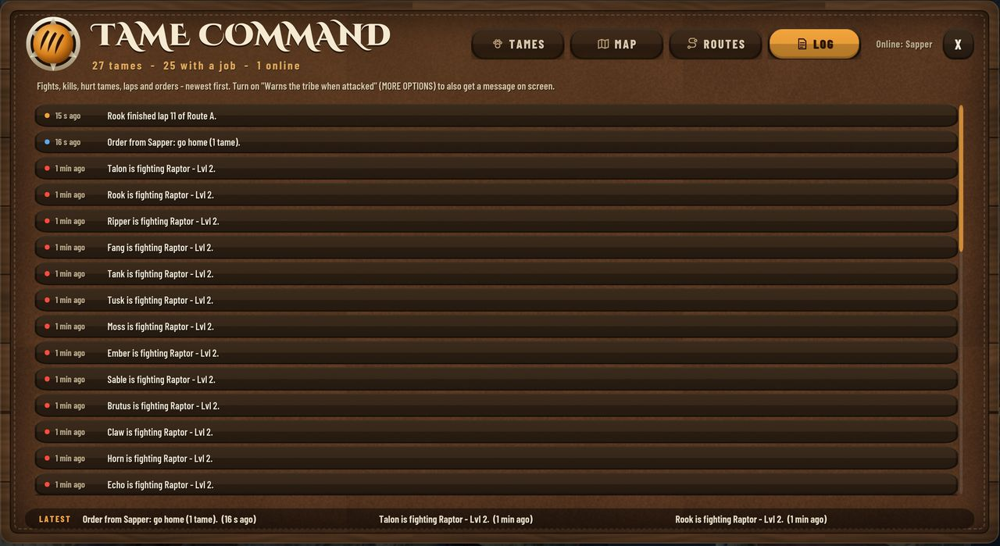

BLACKWIRE
BLACKWIRE
BLACKWIRE
BLACKWIRE
Give your tames real jobs - guard you, guard a spot, patrol your base or go home - and they never get left behind.

Walk up to your tame, hold Use and pick Tame Jobs.
| Job | What the tame does |
|---|---|
| Guard me | Follows you and fights within 25 m |
| Guard here | Stays at its spot and fights within 25 m |
| Patrol | Walks your Patrol Posts in order. Each post takes an order (1 to 8) and a route (A to D). |
| Wander here | Wanders up to 15 m from its spot |
| Gather here | Gathers trees and rocks within 15 m and puts it in a storage box within 20 m |
| Go home | Walks to its Home Post. It teleports home if it is over 150 m away, stuck for 8 seconds or not home after 90 seconds. |
| Stop job | Back to normal |
| Setting | Attacks |
|---|---|
| Only attackers | Only what attacks it |
| Protect the tribe | Also defends your tribe (the default) |
| Enemy players | Enemy players too |
| Everything | Attacks everything nearby |
A tame more than 80 m behind you, or stuck, teleports to you.
Give the same order to every tame within 30 m at once.
Copy one tame's job to others of its kind.
Every tribe tame in one screen, with jobs, saved groups, a map and a log.
Owners can turn tame teleports off. Go home and Never left behind then only walk.





cheat giveitem "Blueprint'/BlackWire_TameJobs/PrimalItemStructure_BWTJ_HomePost.PrimalItemStructure_BWTJ_HomePost'" 1 0 0cheat giveitem "Blueprint'/BlackWire_TameJobs/PrimalItemStructure_BWTJ_PatrolPost.PrimalItemStructure_BWTJ_PatrolPost'" 1 0 0cheat giveitem "Blueprint'/BlackWire_TameJobs/PrimalItemStructure_BWTJ_Terminal.PrimalItemStructure_BWTJ_Terminal'" 1 0 0Ask in the Tame Jobs channel on the BlackWire Mods Discord.